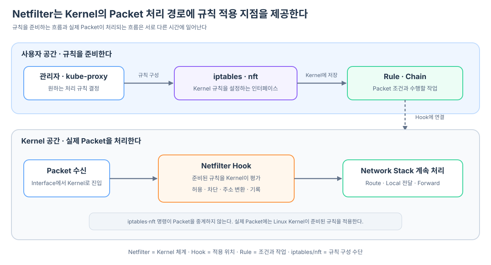

Pod 쪽 veth 끝점인 eth0에서 송신한 Packet이 Peer인 Host 쪽 veth 끝점에 수신됐다. 이제 Node는 목적지를 확인하고 다음 경로로 전달해야 한다. 그런데 전달하기 전에 통신을 차단하거나, Service IP를 실제 Pod IP로 바꿔야 할 수도 있다. 이런 작업은 Linux Kernel의 Packet 처리 과정 어디에서 이루어질까?
이 질문에 답하려면 PREROUTING부터 외우기보다 Netfilter가 왜 존재하고 무엇을 제공하는지 먼저 알아야 한다.
Netfilter는 Linux Kernel의 Packet 처리 체계다
Linux Kernel의 Network Stack은 Interface에서 Packet을 받고, 목적지를 판단하고, 현재 Machine의 Application에 전달하거나 다른 Network로 내보낸다. Netfilter는 이 처리 과정의 정해진 지점에 기능을 연결하여 Packet을 검사하거나 수정할 수 있게 해 주는 Kernel 내부 체계다.
Linux Kernel의 기본 Network 처리
Packet 수신
→ 목적지와 경로 판단
→ Local Application에 전달하거나 다른 Interface로 송신
Netfilter가 제공하는 것
처리 경로의 정해진 지점
→ 등록된 검사·변환 기능 실행
→ Packet 허용·차단·주소 변환·기록 등에 활용
Netfilter는 별도의 Proxy Server나 항상 실행되며 Packet을 중계하는 사용자 공간 Process가 아니다. 실제 Packet은 계속 Kernel의 Network Stack 안에서 움직이고, Kernel이 Netfilter 처리 지점에 등록된 기능과 규칙을 적용한다.

Netfilter를 이해할 때는 다음 요소를 구분하면 된다.
| 요소 | 역할 |
|---|---|
| Linux Network Stack | Packet을 수신하고 Route를 판단하며 전달한다. |
| Netfilter | Network Stack의 처리 경로에 기능을 연결할 Hook을 제공한다. |
| Hook | PREROUTING처럼 규칙이나 처리 기능이 실행될 수 있는 구체적인 지점이다. |
| Rule | 어떤 Packet에 어떤 작업을 적용할지 표현한다. |
| iptables·nftables | Kernel에 Rule과 Chain을 구성하는 데 사용하는 도구·체계다. |
| Kernel | 실제 Packet이 도착했을 때 규칙을 평가하고 작업을 실행한다. |
Kubernetes에서는 누가 각 Node의 규칙을 만들고 Service나 Pod가 바뀔 때 어떻게 다시 맞추는지가 다음 질문이 된다. CNI의 Pod Network 구성부터 kubelet의 보고, Controller의 EndpointSlice 갱신, kube-proxy의 Host 규칙 적용까지 이어지는 과정은 Pod 생성은 어떻게 각 Node의 Netfilter 규칙 갱신으로 이어질까?에서 자세히 살펴본다.
예를 들어 “목적지가 이 Service IP인 Packet을 실제 Pod IP로 바꾼다”는 규칙을 구성할 수 있다. 이후 Packet이 도착하면 iptables 명령이나 kube-proxy Process가 매 Packet을 직접 받아 바꾸는 것이 아니라 Kernel이 Netfilter 경로에서 준비된 규칙을 평가한다.
규칙을 준비하는 흐름
kube-proxy 또는 관리자
→ iptables·nftables 계열 인터페이스로 규칙 구성
→ Kernel에 규칙이 저장됨
실제 Packet의 흐름
Packet이 Kernel Network Stack에 도착
→ Netfilter Hook에서 규칙 평가
→ 조건과 일치하면 허용·차단·주소 변환 등의 작업 실행
이제 “그 규칙을 Packet 처리의 정확히 어느 위치에서 적용하는가?”라는 질문으로 내려갈 수 있다. 그 위치가 Hook이며, 앞서 등장한 PREROUTING도 대표적인 Hook 중 하나다.
Hook은 Packet 처리 중 규칙을 적용할 수 있는 지점이다
Hook은 별도 서버나 Process가 아니다. Kernel이 Packet을 처리하다가 등록된 처리 기능을 실행할 수 있는 지점이다. 이곳에서 주소나 Port, 연결 상태 등에 따라 Packet을 허용하거나 버리고, 주소를 변환하는 작업을 수행할 수 있다.
일반적인 IPv4·IPv6 Network Stack의 경로를 이해할 때는 다음 다섯 Hook부터 구분하면 된다.
| Hook | 적용 시점 |
|---|---|
| PREROUTING | 수신 Packet의 전달 경로를 판단하기 전 |
| INPUT | 수신 Packet을 현재 Network Namespace 자신에게 전달할 때 |
| FORWARD | 수신 Packet을 다른 곳으로 전달할 때 |
| OUTPUT | 현재 Network Namespace에서 생성한 Packet을 내보낼 때 |
| POSTROUTING | 출력 경로가 정해진 Packet을 내보내기 전 |
이 다섯 곳을 모든 Packet이 순서대로 지나는 것은 아니다. 수신한 Packet인지, 직접 생성한 Packet인지, 목적지가 자신인지에 따라 경로가 갈라진다.
받은 Packet은 목적지에 따라 INPUT 또는 FORWARD로 갈라진다
Host veth에서 수신한 IP Packet의 일반적인 처리 흐름을 보면 PREROUTING 다음에 Routing 판단이 있다.
Host veth에서 수신
→ PREROUTING
→ Routing 판단
├─ 목적지가 Host 자신
│ → INPUT
│ → Host의 수신 Socket
│ → Application
│
└─ 다른 곳으로 전달
→ FORWARD
→ POSTROUTING
→ 출력 Interface
Node가 Packet을 받았다는 사실만으로 INPUT으로 가는 것은 아니다. Host의 Application이 받을 Packet이면 INPUT으로, 다른 Pod나 Node로 전달할 Packet이면 일반적인 IP 전달 경로에서 FORWARD로 간다.
여기서 자신이라는 기준은 현재 Network Namespace다. Host와 Pod는 Kernel을 공유하지만 서로 다른 Network Namespace의 관점에서 입력과 출력을 처리한다.
PREROUTING은 목적지를 바꾸고 나서 길을 찾을 수 있게 한다
PRE는 이전을 뜻한다. PREROUTING은 수신 Packet에 대해 해당 Namespace에서 전달 경로를 결정하기 전에 규칙을 적용하는 지점이다.
Service IP를 실제 Pod IP로 바꾸는 예시를 생각하면 이 순서가 필요한 이유가 보인다. kube-proxy의 iptables 구성에서는 새 연결의 첫 Packet이 다음처럼 처리될 수 있다.
Host veth에서 수신
목적지: Service IP 10.96.10.20:8000
→ PREROUTING에서 Service 관련 규칙 적용
→ Endpoint 선택 및 DNAT
목적지: Pod IP 10.244.2.7:8000
→ Host의 Routing 판단
→ 10.244.2.7로 가는 경로 선택
DNAT는 Destination Network Address Translation, 즉 목적지 주소 변환이다. PREROUTING은 작업을 적용할 위치이고, DNAT는 그 위치에서 규칙에 따라 수행할 수 있는 작업이다. PREROUTING에 들어왔다고 모든 Packet의 목적지가 바뀌는 것은 아니다.
또한 Routing 이전이라는 말은 Host에서의 경로 판단 이전이라는 뜻이다. Pod가 먼저 eth0을 선택했던 Route 판단은 별도로 이미 일어났다.
Pod의 Route 판단 → Pod 쪽 veth 끝점 eth0에서 TX → Host 쪽 veth 끝점에서 RX
↓
PREROUTING
↓
Host의 Route 판단
직접 만든 Packet은 OUTPUT 경로로 나간다
Host의 Application이 직접 만든 Packet은 외부 Interface에서 수신된 것이 아니다. 따라서 일반적인 로컬 송신 경로에서는 초기 Route 판단 뒤 OUTPUT을 지나고, POSTROUTING을 거쳐 송신한다.
Host Application이 Packet 생성
→ 초기 Route 판단
→ OUTPUT
→ 필요하면 변경 사항에 따라 경로 재판단
→ POSTROUTING
→ 출력 Interface
OUTPUT에서 목적지 등이 바뀌면 경로를 다시 판단해야 할 수 있다. Host에서 Service IP에 접속하는 경우에도 해당 로컬 송신 경로에 맞는 Service 규칙이 필요하다.
Pod가 생성한 Packet 역시 Pod Namespace에서는 로컬 송신 Packet이다. 하지만 veth를 건너 Host veth에서 RX로 나타나면 Host Namespace에서는 수신 Packet이므로 PREROUTING 쪽 입력 경로로 이어진다.
iptables와 nftables는 규칙을 설정하는 수단이다
Netfilter의 처리 지점에서 무엇을 검사하고 어떤 작업을 할지는 규칙으로 정한다. iptables와 nftables는 이런 규칙을 구성하는 데 사용하는 도구·체계다. nftables의 명령줄 도구 이름은 nft다.
관리자 또는 kube-proxy
→ iptables 또는 nftables로 규칙 구성
→ Kernel에 규칙 저장
실제 Packet 도착
→ Kernel의 해당 Hook에서 규칙 평가
→ 허용·차단·주소 변환 등 수행
iptables 명령이 매 Packet을 받아서 다시 보내는 것은 아니다. 명령은 설정을 바꾸고, 이후의 실제 Packet 처리는 Kernel이 수행한다. iptables에는 규칙을 묶는 Table과 Chain이 있으며, nftables에서는 Base Chain을 Hook에 연결해 규칙을 적용할 수 있다. Hook은 처리 지점, Chain은 규칙을 묶어 평가하는 구조로 구분하면 된다.
iptables와 nftables를 항상 둘 다 사용해야 하는 것은 아니다. 또한 iptables 명령을 사용하더라도 환경에 따라 nftables 기반 호환 Backend를 사용할 수 있다. 명령 이름만으로 내부 구현을 단정할 필요는 없다.
Kubernetes에서는 kube-proxy가 Service 규칙을 준비한다
kube-proxy는 Service와 EndpointSlice의 변경을 관찰하고 선택한 모드에 맞게 전달 규칙을 구성한다. iptables 모드에서는 커널의 규칙을 통해 Service IP와 Port를 실제 Endpoint에 연결한다.
설정 흐름
Service·EndpointSlice 변경
→ kube-proxy가 관찰
→ Kernel의 Service 관련 규칙 갱신
Packet 흐름: 일반적인 Host 수신 및 IP 전달 예시
Host veth RX
→ PREROUTING의 Service 관련 규칙
→ 실제 Endpoint 선택 및 DNAT
→ 변경된 Pod IP로 Route 판단
→ FORWARD
→ POSTROUTING
→ 대상 Pod 방향으로 송신
Endpoint 선택과 NAT 규칙 평가는 연결의 첫 Packet을 기준으로 이해하면 된다. 이후 같은 연결의 Packet은 연결 추적 상태에 저장된 NAT 변환을 사용하므로 매번 새로운 Endpoint를 고르는 것은 아니다.
이 글은 일반적인 Linux IP 처리와 kube-proxy의 iptables 구성을 중심으로 설명했다. Bridge의 세부 처리와 eBPF 기반 Service 구현 등에서는 실제 처리 위치와 경로가 달라질 수 있다.
세 역할을 연결하면 Packet을 읽는 기준이 생긴다. Netfilter는 규칙을 적용할 처리 지점을 제공한다. iptables·nftables는 그 지점에서 적용할 규칙을 구성한다. Routing은 현재 목적지와 Routing 정보를 바탕으로 전달 경로를 결정한다.